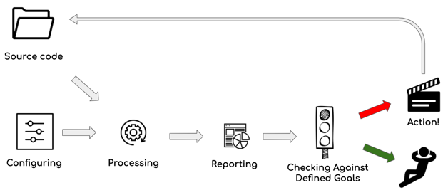

Using Sokrates
In a nutshell, Sokrates is a exploration and feedback giving tool, that can help you to understand you code, reflect and discuss its findings, and take actions based on the findings.
You can use Sokrates in four modes:
- the analyze and reflect mode
- the interactive explorations mode
- the traffic lights mode
- the software architecture documentation mode
Analyze and Reflect
The analyze and reflect mode has two phases:
- the initial configuration phase, where we are configuring Sokrates to make sure that we analyze the right code, and that we have useful views on the code
- the frequent running of the Sokrates analyses to see the states and changes in code.
Sokrates does not directly gives you advice on what to changes in you code. Rather, it provides you practical insights into the interesting pieces of code that may requires some action. For instance, Sokrates will give you clear pointers to highly duplicated code, cyclic dependencies, very long files, or very complex units. However, it is up to you to define an action plan and to make a decision if you want to do something about the findings.
Based on the reflection, you may also decide to re-configure the Sokrates to get better view on your code. The example may be adding or excluding file extensions, or adding an additional logical decomposition, ot, for instance, zoom into a big component to see its sub-components and their dependencies.
Figure 1: The analyze-and-reflect mode. In the initial configuration phase, we need to properly configure Sokrates to ensure that we analyze the right code and have useful views on it. After that, you can run Sokrates as frequently as you want to see the state of your system. And then use the results of analysis to make decision what to do, eventually changing the code.
You can use Sokrates ad-hoc or in weekly rythm to see trends and take actions. For instance, I have been using Sokrates as part of bi-weekly sprint reviews. You can configure Sokrates to run as a part of you continuous delivery pipeline. If you are refactoring code, you can also ad-hoc re-run Sokrates to see how are you progressing.
Interactive Explorations
“I drink a lot of coffee before I go to sleep so I can dream faster. I can dream like when they put a camera on the Indy 500 … when they put a camera in the car, and it’s just whipping by like that. Dream after dream after dream after dream. People ask me the next day, “What did you dream about?” I say, “I don’t have time. I don’t have time to tell you this.”” — Coffee and Cigarettes (2003)
My favorite way of using Sokrates is exploration. In an explorative mode configuring of Sokrates and processing based on the configuration are tightly coupled.
To support explorative mode, I have built as a part of Sokrates tools the Explorer a tool with a graphical user interface that consists of a configuration editor, code preview panels, and several additional features that facilitate free explorations fo code. Explorer centralizes configuration, running of commands, and preview of analysis results in one tool. With Explorer, you can almost instantly see how a change in a setting, e.g., adding a new rule for detecting test files, impacts the analysis results.
Figure 2: Explorer centralizes configuration, running of commands, and preview of analysis results in one tool. With Explorer, feedback loops are short as you can almost instantly see how a change in a setting, e.g., adding a new rule for detecting test files, impacts the analysis results.
Explorer also includes many features for manual, free form explorations, for instance, efficient regex code searches. If you find some interesting piece of code, you can also highlight it and add it to your manual findings. A more detailed description of Explorer you can find in Appendix: Sokrates Explorer.
Explorer is the most useful in initial phases of analysis, when you are discovering the patterns in your source code, as well as during the reconfiguration of the project.
Goals and Controls
In the end, you can also use Sokrates in a more simplified analyze-and-reflect mode, where you can replace the reflect part with a set of clearly defined traffic lights like controls. For each of the metrics that Sokrates measures, you can specify a control with the threshold and tolerance. Sokrates will then generate a report labeling each control with one of the following states:
- OK (green) the measured value is below the threshold
- tolerant (yellow) the measured value is above the threshold but within the tolerance range
- failed (red), the measured value is above the threshold and the tolerance level.

Figure 3: The goals-and-controls mode, a simplified analyze-and-reflect mode, where you can replace the reflect part with a set of clearly defined traffic lights like controls. For each of the metrics that Sokrates measures, you can specify a control with the threshold and tolerance. And then react when the measurements are out of safe range.
For instance, let’s assume that we have defined a control for duplication, setting the threshold to 5% and the tolerance level to 2%. If the measured duplication level is 4%, Sokrotes will label the control as OK (green). For the measured duplication level of 8%, Sokrates will label the control as failed (red). If the measured duplication is 6% Sokrates will mark the controls as tolerant (yellow).
The example of a Sokrates controls report you can find here.
Software Architecture Documentation Tool
While the main power of Sokrates lies in pragmatic source code analyses, your can also use Sokrates as a software documentation tool. On the one hand you can look at the Sokrates configuration file as a mere input for analysis. On the other hand, this configuration file encodes the patterns used in source code to classifiy files, define components and concerns.
As a documentation tool, Sokrates follows several premises (borrowing last two from Grady Booch):
- Any software architecture documentation disconnected from source code is doomed to become outdated and useless quickly.
- The best formal and unambiguous specification of a software-intensive system is its executable code.
- However, executable code as a specification is insufficient for visualizing, reasoning about, understanding, and communicating about that system.
Sokrates provides a pragmatic way to describe critical elements of software architectures and connect them explicitly to the source code. Based on a formal description of different software architecture aspects, Sokrates generates reports and visualization to help you reason, understand, and communicate about the software system.
Learn more on Sokrates configuration file in a separate section.